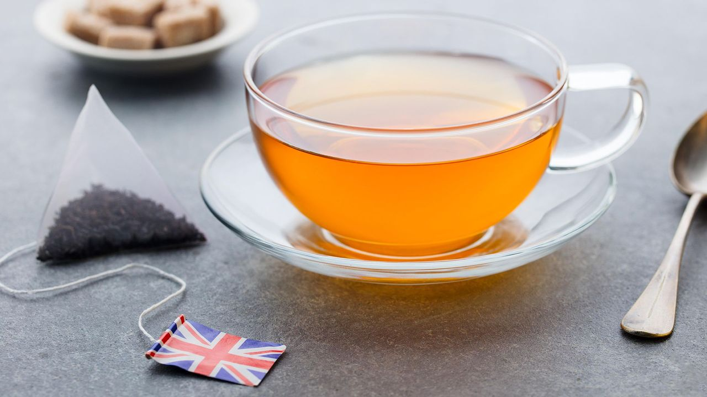
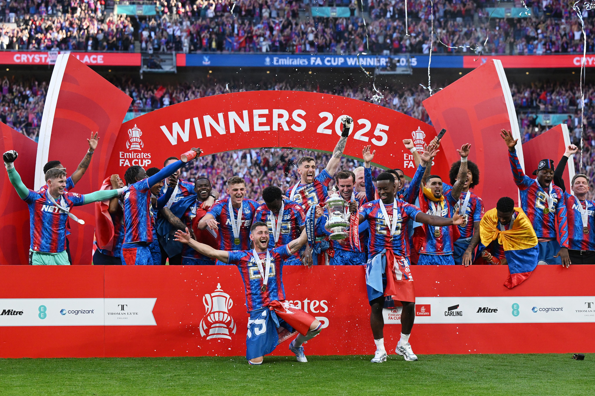

The United Kingdom has a long history and a culture known around the world. Each part of the UK, England, Scotland, Wales, and northern Ireland has its own customs, accents, and traditions. Together they create a country that is lively and full of character.

The UK is known for many well loved traditions. Afternoon tea is a popular custom, where people enjoy tea with small sandwiches and cakes. Events like Bonfire Night and the Queen/King's birthday parade are celebrated every year. Different regions also have their own traditions such as the Highland Games in Scotland and Eisteddfod music festivals in Wales.
English is the main language spoken in the UK but it isn't the only one. Welsh, Scots Gaelic, and Irish are also used, especially in certain areas. Because the UK is home to people from many different backgrounds you can hear lots of other languages too.
Sport is very important in the UK. Football is the most popular, and many people follow their local teams closely. Rugby, cricket, and tennis are also well-loved. Big events like Wimbledon and the FA Cup bring the whole country together.
The UK has influenced music and art all over the world. Famous bands like The Beatles and Queen came from here, and today many popular artists still come from the UK. The country is also known for its theatre, museums, and art galleries, which show both traditional and modern styles.
